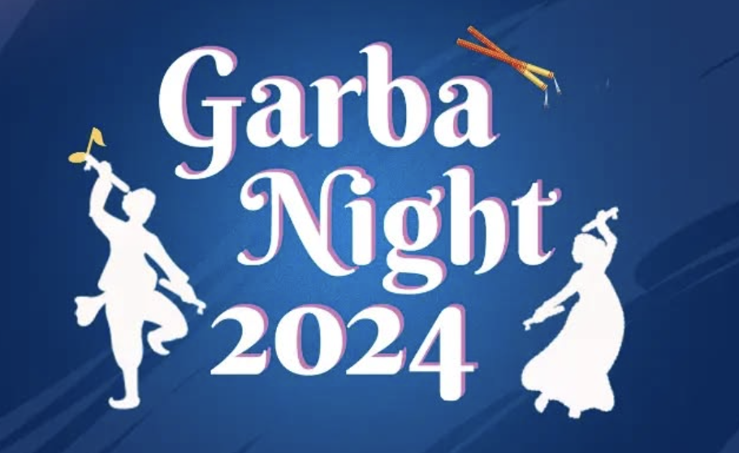

Welcome to
Gujarat Cultural Association
IIT Kharagpur
The Gujarat Cultural Association (GCA) at IIT Kharagpur celebrates and promotes Gujarati culture through events like Navratri Garba, food festivals, and traditional performances. It fosters cultural exchange, unites students, and enriches the institute's vibrant multicultural environment.
Garba Night

Garba Night, organized by the Gujarat Cultural Association at IIT Kharagpur, is a vibrant celebration of Gujarati culture, featuring traditional Garba and Dandiya dances. The event brings students together to groove to energetic folk music in colorful attire, creating an atmosphere of joy and festivity. It’s a cherished occasion that fosters unity, cultural exchange, and memorable experiences for the campus community.
Garba Night
Garba Night, organized by the Gujarat Cultural Association at IIT Kharagpur, is a vibrant celebration of Gujarati culture, featuring traditional Garba and Dandiya dances. The event brings students together to groove to energetic folk music in colorful attire, creating an atmosphere of joy and festivity. It’s a cherished occasion that fosters unity, cultural exchange, and memorable experiences for the campus community.